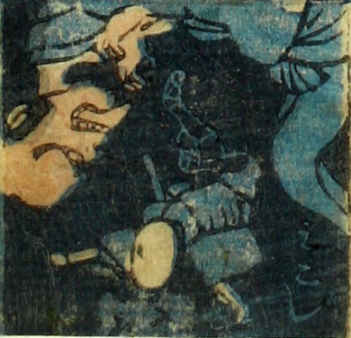

見越し入道；ミコシニュウドウ，男；オトコ

見越し。宙に浮かぶ巨大な男が、舌を出して、旅装束の男を脅かしている。
著作者：芳盛／出典：親書誌：U426_nichibunken_0073：しん板化物尽し；シンパンバケモノヅクシ／日付：2006／資源識別子：U426_nichibunken_0073_0040_0000
Copyright (c)2010- International Research Center for Japanese Studies, Kyoto, Japan. All rights reserved.